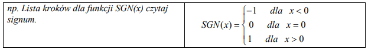
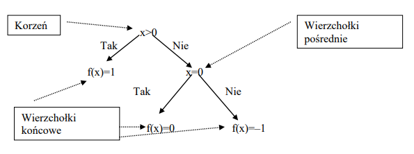
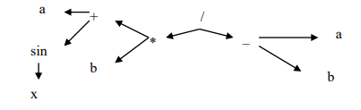
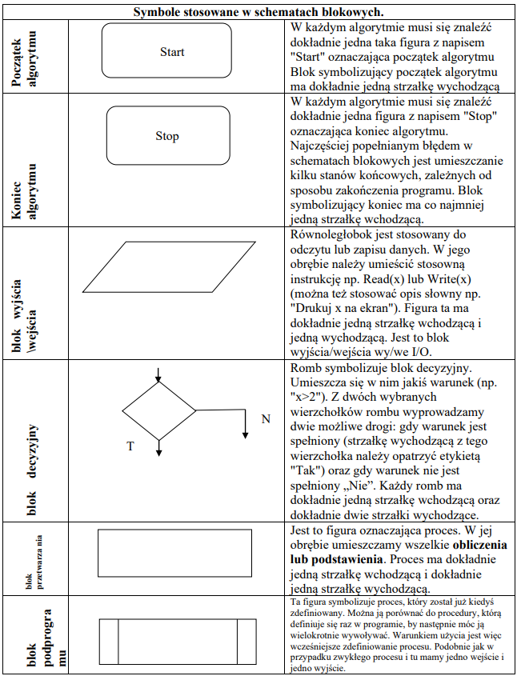
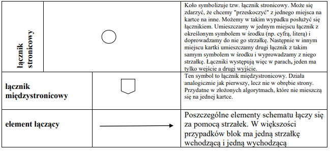

- Co to jest programowanie?
Programowanie to proces składający się z etapów:
a)tworzenia programu,
b) testowanie programu.
- Reguły stosowane w językach programowania
Język programowania musi mieść określone:
a)Reguły syntaktyczne→ reguły składni wyrażeń i funkcji użytych w programie,
b)Reguły semantyczne→ semantyka języka programowania definiuje precyzyjnie znaczenie
poszczególnych symboli (instrukcje, operatory itp.) oraz ich funkcję w programie.
- Definicja algorytmu
Definicja 1
Algorytm →jest to pewien ciąg czynności, który prowadzi do rozwiązania danego problemu
w skończonej ilości kroków.
Definicja 2
Algorytm→ to jednoznaczny przepis, opisujący krok po kroku sposób postępowania w celu
rozwiązania pewnego problemu lub sposobu osiągnięcia jakiegoś celu.
Ilość kroków algorytmu zależy od tego, jak złożony jest problem, którego on dotyczy. Zawsze
jednak liczba tych kroków będzie liczbą skończoną.
- Cechy algorytmu
Cechy charakterystyczne poprawnego algorytmu:
- Poprawność - dla każdego przypisanego zestawu danych, po wykonaniu skończonej
liczby czynności, algorytm prowadzi do poprawnych wyników.,
- Jednoznaczność - w każdym przypadku zastosowania algorytmu dla tych samych
danych otrzymamy ten sam wynik.
- Szczegółowość - wykonawca algorytmu musi rozumieć opisane czynności i potrafić je
wykonywać.
- Uniwersalność - algorytm ma służyć rozwiązywaniu pewnej grupy zadań, a nie tylko
jednego zadania. Przykładowo algorytm na rozwiązywanie równań w postaci ax + b=0 ma je
rozwiązać dla dowolnych współczynników a i b, a nie tylko dla jednego konkretnego zadania,
np. 2x + 6 = 0
- Skończoność – dla każdego zbioru poprawnych danych wejściowych algorytm powinien
zwracać wyniki w skończonej liczbie kroków.
- Efektywność – algorytm powinien rozwiązywać problem w jak najmniejszej liczbie
kroków.
- Etapy konstruwania algorytmu
Etapy konstruwania algorytmu(programu):
- Sformułowanie zadania.
- Określenie danych wejściowych
- Określenie wyniku oraz sposobu jego prezentacji.
- Ustalenie metody wykonania zadania.
- Przy użyciu wybranej metody następuje zapisanie algorytmu.
- Dokonujemy analizy poprawności rozwiązania.
- Testowanie rozwiązania dla różnych danych.
- Ocena skuteczności tegoż algorytmu.
- Sposoby
Algorytmy można przedstawiać m.in. następującymi sposobami:
- słowny opis
- schemat blokowy
- lista kroków
- drzewo algorytmu
- drzewo wyrażeń
- w pseudojęzyk
- w język programowania
Różne sposoby przedstawiania algorytmów
a)opis słowny
Jest na ogół pierwszym, mało ścisłym opisem sposobem rozwiązania problemu. Rozpoczyna
się często dyskusją, w jaki sposób można rozwiązać postawione zadanie. Dyskusja służy do
rozważań nad sposobem i technikami przydatnymi w rozwiązania problemu.
np. Opis słowny do algorytmu opisującego funkcję modułu (wartość bezwzględną).
Dla wartości dodatnich argumentu x funkcja przyjmuje wartość x, dla wartości ujemnych
argumentu x funkcja przyjmuje wartość –x.
b)schemat blokowy
c)lista kroków
Poszczególne kroki zawierają opis operacji, które mają być wykonane prze algorytm. Mogą w
nich również wystąpić polecenia związane ze zmianą kolejności wykonywanych kroków.
Kolejność kroków jest wykonywana w kolejności ich opisu z wyjątkiem sytuacji gdy jedno z
poleceń w kroku jest przejściem do kroku o podanym numerze. Budowa opisu algorytmu w
postaci listy kroków jest następujący:
- tytuł algorytmu
- specyfikacja problemu
- lista kroków
- komentarze ujęte w nawiasy klamrowe {komentarz}

Algorytm obliczania wartości funkcji SGN(x)
Dane: Dowolna liczba rzeczywista x.
Wynik:Wartość funkcji
Krok 0. Wczytaj wartość danej x
Krok 1. Jeśli x>0, to f(x)=1. Zakończ algorytm
Krok 2. {W tym przypadku x<= 0.} Jeśli x=0, to f(x)=0 . Zakończ algorytm
Krok 3. {W tym przypadku x< 0.} Mamy f(x)=–1 . Zakończ algorytm.
d)drzewo algorytmu
Nazywany jest również drzewem obliczeń. Każde dwie drogi obliczeń mogą mieć tylko
początkowe fragmenty wspólne, ale po rozejściu już się nie spotkają.
np. Drzewo algorytmu dla funkcji SGN(x).

e)drzewo wyrażeń
Stosowane do obliczeń wyrażeń arytmetycznych.
np. Wyrażenie (a+sin(x))*b/(a–b)

f)program w języku programowania np. C++, Pascal
g)pseudojęzyk
PROGRAM Wycieczka;
ZMIENNE punkty:naturalne;
koszty, dofinansowanie:rzeczywiste;
ZACZNIJ;
WPROWADŹ(PUNKTY,KOSZTY);
JEŚLI punkty >=100 i punkty <= TO dofinansowanie :=1/3*koszty+0.2*koszty
W PRZECIWNYM WYPADKU
dofinansowanie:=0.2*koszty;
WYPROWADŹ('Dofinansowanie wynosi:'dofinansowanie);
ZAKOŃCZ.
- Specyfikacja problemu
Jest to dokładny opis problemu, który chcemy rozwiązać.
Specyfikacja składa się z:
- danych wejściowych,
- dane wyjściowe oraz warunki jakie muszą spełniać (czyli związek pomiędzy danymi a
wynikami).
- warunki jakie muszą spełniać dane wejściowe
- rysunki ( jeśli są konieczne), wzory obliczeniowe
- Symbole stosowane w schematach blokowych.


- Reguły rysowania schematów blokowych.
- Po zbudowaniu schematu blokowego nie powinno być takich strzałek, które z nikąd nie
wychodzą, lub do nikąd nie dochodzą.
- Każdy schemat blokowy musi mieć tylko jeden element startowy oraz co najmniej jeden
element końca algorytmu
- Element łączący(strzałki łączące) powinien być rysowany w poziomie i pionie, załamania
pod kątem prostym.
- Podział algorytmów
Definicja algorytmu liniowego
Algorytmem liniowym nazywamy taki algorytm, który ma postać listy kroków
wykonywanych zgodnie z ich kolejnością.
Algorytmy liniowe są zapisem obliczeń, które mają postać ciągu operacji rachunkowych
wykonywanych bez sprawdzania jakichkolwiek warunków.
Algorytm z warunkami (rozgałęzieniami)
Ten typ algorytmu musi mieć bloki decyzyjne czyli bloki sprawdzania warunków.
Algorytm numeryczne
Algorytmy, które wykonują działania matematyczne na danych liczbowych, nazywamy
algorytmami numerycznymi.
Algorytm typu dziel i zwyciężaj
Dzielimy problem na kilka mniejszych, a te znowu dzielimy, aż ich rozwiązania staną się
oczywiste,
Algorytmy iteracyjne
Iteracja jest to zapętlenie algorytmu, czyli wykonywania danych działań, dopóki warunek
iteracji nie zostanie spełniony. Jest ona podstawą wszystkich choć troszkę bardziej złożonych
algorytmów. Zazwyczaj ma ona składnię wykonuj "jakaś czynność" dopóki "jakieś wyrażenie
logiczne".
Algorytmy rekurencyjne
Rekurencje wykorzystuje się do rozwiązywania problemów gdzie powtarza się czynność aby
do niego dojść. Swoim działaniem przypomina iteracje. Jednak w tym przypadku funkcja
sama siebie wywołuje, dopóki nie otrzyma rozwiązania, natomiast tam mieliśmy
powtórzenie pewnej czynności określoną ilość razy.
- Złożoność algorytmów
Złożoność algorytmu- ilość zasobów potrzebnych do poprawnego działania danego
algorytmu
Złożoności obliczeniowa-Algorytm wykonujący najmniejszą ilość operacji podstawowych w
celu rozwiązania problemu.
Złożoność czasowa- Określa ilość operacji podstawowych potrzebnych do wykonania
algorytmu o danej wielkości wejściowej.
Złożoność pamięciowa- Określa ilość przestrzeni pamięci wirtualnej potrzebnej do
wykonania algorytmu z określonym zestawem danych wejściowych.
- KODY ASCII
Link do kodów ASCII